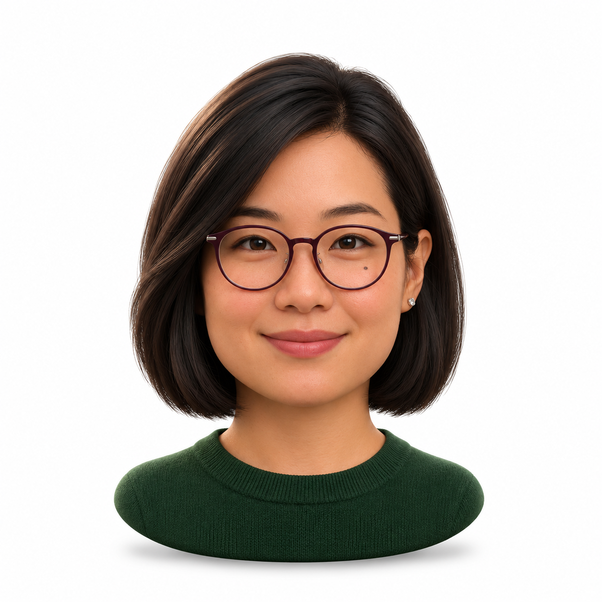

从参考照到角色头像
用左图作输入，要求保留人物特征，改成白底、头肩居中的 3D 动画风头像。
对照短发轮廓、圆眼镜和墨绿领口。缩小后再看哪些线索还能辨认。
这组用内置 ImageGen 实际生成，人物为虚构。原帖作者发布的 GPT Image 2.5 样片另见第 02 条。
生成约束
固定身份、肤色、发型、眼镜、衣着和表情。改动三维卡通质感、主体比例与白底留白。正面头肩，1:1，柔光，微弱投影。

用左图作输入，要求保留人物特征，改成白底、头肩居中的 3D 动画风头像。
对照短发轮廓、圆眼镜和墨绿领口。缩小后再看哪些线索还能辨认。
这组用内置 ImageGen 实际生成，人物为虚构。原帖作者发布的 GPT Image 2.5 样片另见第 02 条。
固定身份、肤色、发型、眼镜、衣着和表情。改动三维卡通质感、主体比例与白底留白。正面头肩，1:1，柔光，微弱投影。